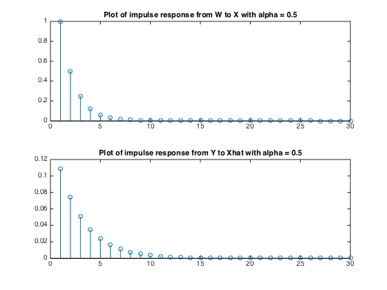

clear; close all;
beta = 1;
alphaV = [0.1, 0.5, 0.9, 0.99];
varX1 = 1;
x0 = 0;
varZ = 1;
h=1;
X = zeros(1,1000);
for i = 1:length(alphaV)
alpha = alphaV(i);
varW = beta*(1-alpha^2);
for n=1:1000
if(n==1)
X(n) = x0 + varX1*randn(1);
else
X(n) = alpha*X(n-1) + sqrt(varW)*randn(1);
end
Yn = h*X(n)+sqrt(varZ)*randn(1);
if(n==1)
xhat(n) = x0 + (h*varX1*(Yn-h*x0))/((h*varX1+varZ));
varSi(n) = varX1*varZ / (h*varX1 + varZ);
else
varZeta(n) = alpha^2*varSi(n-1) + varW;
varSi(n) = varZeta(n)*varZ / (h*varZeta(n)+varZ);
xhat(n) = alpha*xhat(n-1) + (h*varZeta(n)*(Yn-h*alpha*xhat(n-1)))/(h*varZeta(n) + varZ);
end
end
figure; hold;
subplot(2,1,1);hold;plot(X);plot(xhat,'--r');
title(['alpha = ' num2str(alpha) ' MSE= ' num2str(norm((X-xhat))^2) ]);
legend('X', 'Estimate of X');
subplot(2,1,2);plot(varSi);
title('Plot of variance of the estimation error');
convergeSi(i) = varSi(n);
end
for i = 1:length(alphaV)
alpha = alphaV(i);
lam = convergeSi(i);
for n = 1:30
impulseWX(n) = alpha^(n-1);
a = h*lam/(h*lam+varZ);
impulseXY(n) = a*alpha*(1-h*a)^n;
end
figure; hold;
subplot(2,1,1); stem(impulseWX);
title(['Plot of impulse response from W to X with alpha = ' num2str(alpha)]);
subplot(2,1,2); stem(impulseXY);
title(['Plot of impulse response from Y to Xhat with alpha = ' num2str(alpha)]);
end
Current plot held
Current plot held
Current plot held
Current plot held
Current plot held
Current plot held
Current plot held
Current plot held
Current plot held
Current plot held
Current plot held
Current plot held
